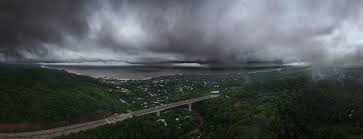
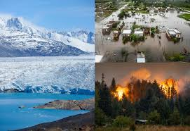
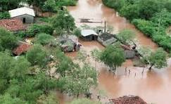
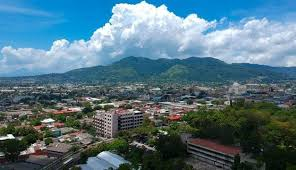

¿Qué es el clima?
El clima es el conjunto de condiciones atmosféricas que predominan en una región durante largos períodos de tiempo, generalmente de 30 años o más. Estas condiciones permiten conocer cómo es normalmente el ambiente de un lugar, es decir, si suele ser cálido, frío, lluvioso, seco, húmedo o ventoso. El clima es estudiado por la climatología, una rama relacionada con la meteorología. Para determinar el clima de un lugar, se analizan diferentes elementos atmosféricos registrados durante muchos años.
Elementos del clima
Los principales elementos que forman el clima son:
Temperatura: indica qué tan caliente o frío está el ambiente.
Precipitación: cantidad de lluvia, nieve o granizo que cae en una zona.
Humedad: cantidad de vapor de agua presente en el aire.
Viento: movimiento del aire en la atmósfera.
Presión atmosférica: peso que ejerce el aire sobre la superficie terrestre.
Radiación solar: energía y calor que recibe la Tierra del Sol.
Todos estos elementos interactúan entre sí y determinan las características climáticas de cada región.

Factores que influyen en el clima
El clima no es igual en todas partes del mundo porque depende de varios factores, entre ellos:Latitud: los lugares cercanos al ecuador reciben más calor solar y suelen ser más cálidos.
Altitud: mientras más alto se encuentra un lugar, más frío suele ser el clima.
Relieve: las montañas pueden bloquear el paso de lluvias o vientos.
Distancia al mar: las zonas costeras tienen temperaturas más moderadas que las zonas interiores.
Corrientes marinas: pueden calentar o enfriar las regiones cercanas.
Vegetación: las áreas con mucha vegetación suelen tener climas más frescos y húmedos.
Actividad humana: la contaminación y deforestación pueden alterar el clima local y global.
Diferencia entre clima y tiempo atmosférico
Muchas veces se confunden estos conceptos, pero son diferentes:El tiempo atmosférico describe las condiciones de la atmósfera en un momento específico, por ejemplo: “hoy está lloviendo”. El clima representa el comportamiento habitual de esas condiciones durante muchos años. Por ejemplo, en El Salvador el clima es mayormente tropical y cálido, aunque algunos días puedan ser frescos o lluviosos.
Tipos de clima
Existen diferentes tipos de clima en el mundo, cada uno con características particulares. Algunos de
los
principales tipos de clima son:
Clima tropical: se caracteriza por temperaturas altas durante todo el año y lluvias
abundantes.
Es común en regiones cercanas al ecuador, como la selva amazónica o el Caribe.
Clima templado: presenta estaciones bien definidas, con veranos cálidos e inviernos fríos. Se
encuentra en zonas como Europa, Estados Unidos y partes de Asia.
Clima frío: tiene temperaturas bajas durante la mayor parte del año, con inviernos muy fríos
y
veranos frescos. Es típico de regiones polares y montañosas.
Clima árido: se caracteriza por la escasez de lluvias y temperaturas extremas, con días muy
calurosos y noches frías. Se encuentra en desiertos como el Sahara o el Atacama.
Clima mediterráneo: presenta veranos secos y calurosos e inviernos suaves y lluviosos. Es
común
en áreas como el sur de España, California y partes de Chile.
Clima monzónico: se caracteriza por lluvias intensas durante una estación y sequías en otra.
Es
típico de regiones como el sur de Asia.
Clima polar: tiene temperaturas extremadamente bajas durante todo el año, con inviernos
largos y
oscuros. Se encuentra en las regiones árticas y antárticas.
Cada tipo de clima influye en la flora, fauna, actividades humanas y forma de vida de las personas
que
habitan esas regiones.
Los más conocidos en El Salvador son:
☀️ Clima soleado.
🌧️ Clima lluvioso.
⛈️ Clima tormentoso.
☁️ Clima nublado.
🌫️ Clima con niebla.
Calidad del aire
La calidad del aire es el estado o condición del aire que respiramos, determinado por la cantidad de sustancias contaminantes que contiene. Cuando el aire tiene pocos contaminantes, se considera limpio y saludable; pero cuando posee grandes cantidades de humo, gases o partículas dañinas, la calidad del aire disminuye y puede afectar a las personas, animales, plantas y al medio ambiente. La calidad del aire es estudiada dentro de la ciencias ambientales y es muy importante porque el aire es indispensable para la vida.
Un aire limpio ayuda a prevenir enfermedades respiratorias y mejora la calidad de vida.
Sin embargo, la contaminación del aire puede causar problemas de salud como asma, bronquitis, alergias,
enfermedades cardiovasculares e incluso cáncer. Además, el aire contaminado contribuye al cambio climático
y daña los ecosistemas.
Por eso es fundamental cuidar la calidad del aire mediante acciones como reducir el uso de vehículos
contaminantes, evitar quemas de basura, promover energías limpias y plantar árboles.
🟢 Buena calidad del aire.
🟡 Calidad moderada.
🔴 Aire contaminado.
Recomendaciones ambientales
A continuación, te presentamos algunas recomendaciones que podemos implementar cada uno de nosotros para cuidar el medio ambiente:

🌳 Plantar árboles ayuda a reducir contaminación.
💧 Ahorrar agua protege los recursos naturales.
♻️ Reciclar reduce residuos contaminantes.
🚲 Utilizar bicicleta disminuye emisiones.
Consejos según el clima
☀️ Usar protector solar y mantenerse hidratado durante días calurosos.
🌧️ Evitar zonas inundadas durante lluvias intensas.
⛈️ Permanecer en lugares seguros durante tormentas.
🌫️ Conducir con precaución en presencia de niebla.
Antecedentes de El Salvador
En los últimos años, diversas investigaciones científicas han mostrado que El Salvador enfrenta importantes problemas relacionados con el clima, la contaminación y el deterioro ambiental. El país ha experimentado un aumento constante de las temperaturas, cambios extremos en las lluvias y períodos de sequía más intensos. Durante 2024, especialistas y registros climáticos señalaron que mayo fue uno de los meses más secos y calurosos de las últimas décadas, mientras que junio presentó lluvias históricas y una humedad extremadamente alta, mostrando cambios bruscos y poco comunes en el comportamiento climático.
Las investigaciones también indican que el cambio climático está afectando la estabilidad ambiental del país. El aumento de calor, las tormentas intensas y las lluvias irregulares han provocado inundaciones, pérdidas agrícolas, deslizamientos de tierra y estrés en las fuentes de agua. Científicos advierten que estos fenómenos están relacionados con el calentamiento global y con actividades humanas que incrementan la contaminación atmosférica y la degradación ambiental.

En cuanto a la contaminación, estudios recientes revelan que muchos ríos, lagos y reservorios salvadoreños presentan niveles preocupantes de contaminantes químicos, residuos farmacéuticos y metales pesados. Investigaciones realizadas en el embalse Cerrón Grande encontraron restos de medicamentos y compuestos químicos en el agua, lo que representa riesgos para los ecosistemas y para la salud humana. Asimismo, estudios científicos sobre el Lago de Ilopango detectaron presencia de metales pesados en el agua superficial y profunda, lo que demuestra el impacto de las actividades humanas y la contaminación industrial.
Las playas salvadoreñas también muestran señales de contaminación creciente. Investigaciones del Laboratorio de Toxinas Marinas de la Universidad de El Salvador encontraron altos niveles de microplásticos en varias playas de la costa salvadoreña, incluyendo partículas diminutas provenientes de botellas, bolsas y otros residuos plásticos. Los científicos consideran que esta contaminación puede afectar la vida marina y eventualmente llegar a la cadena alimenticia humana.
Otro problema importante es la calidad del aire. Investigaciones tecnológicas y ambientales han señalado que en El Salvador existen pocas estaciones oficiales para monitorear la contaminación atmosférica, a pesar del aumento del tráfico vehicular, la quema de basura y las emisiones industriales. Expertos afirman que el material particulado y otros contaminantes del aire representan un riesgo para la salud respiratoria de la población, especialmente en zonas urbanas.

Además, científicos y ambientalistas han advertido sobre la deforestación y la pérdida de áreas verdes, las cuales reducen la capacidad natural del país para regular el clima y absorber dióxido de carbono. La expansión urbana, la tala de árboles y algunos proyectos industriales han contribuido al deterioro ambiental. También existen preocupaciones recientes relacionadas con actividades mineras y descargas de aguas residuales que podrían aumentar la contaminación de ríos y suelos en distintas zonas del país.
En general, las investigaciones científicas muestran que El Salvador enfrenta un escenario ambiental complejo, caracterizado por temperaturas más altas, fenómenos climáticos extremos, contaminación del agua y del aire, acumulación de residuos plásticos y pérdida de ecosistemas naturales. Los expertos consideran que será necesario fortalecer las políticas ambientales, aumentar el monitoreo científico y promover acciones de conservación para reducir los efectos del cambio climático y proteger la salud de la población y los recursos naturales del país.